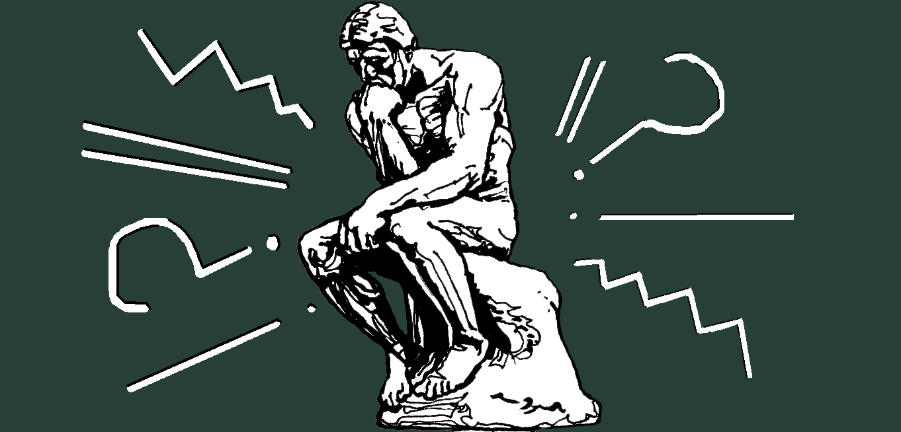

Самостоятельная подготовка к ЕГЭ


Самостоятельная подготовка к ЕГЭ

нажми на кнопку
Включает 26 заданий с кратким ответом.
Это могут быть: выбор варианта из предложенных;самостоятельная формулировка ответа (слово, число, последовательность);установление соответствий.
Задание 27 — сочинение-рассуждение по проблеме, поставленной в исходном тексте.
Объём сочинения — не менее 150 слов. Работа, написанная без опоры на прочитанный текст (не по данному тексту), не оценивается. Если сочинение представляет собой полностью переписанный или пересказанный исходный текст без каких бы то ни было комментариев, такая работа оценивается 0 баллов.
- длительность экзамена – 3 часа 30 минут.
- сдающие экзамен обязаны иметь при себе: паспорт, черную гелиевую ручку.
- орфографически словарь на егэ не предусмотрен!
- запрещается брать с собой: телефон или любые средства связи, умные часы, шпаргалки.
- знание орфографии, пунктуации, лексики, умение анализровать текст.
Максимальный балл за всю работу - 50 первичных балла.
- задания 8, 26 - 2 первичных балла
- остальные задания 1 части - 1 первичный балл.
- это самая 'дорогая' часть экзамена. Оно оценивается по комплексу критериев и приносит 22 первичных балла.
Первичный балл: сумма баллов за все решенные задания.
Тестовый балл: окончательный результат по 100-балльной шкале.
- Эпитет, метафора, олицетворение, сравнение, гипербола, фразеологический оборот
- Правописание приставок. Неизменяемые приставки, на з-, с-, правописание пре-, при-
- Суффиксы существительных, прилагательных, наречий
- “-н-” и “-нн-” прилагательных, причастий, наречий, отглагольных прилагательных
- Личные окончания глаголов I и II спряжения, суффиксов причастий настоящего времени
- Лексика и фразеология. Синонимы
- Словосочетание, замена одного типа связи другим
- Грамматическая основа предложения
- Формы выражения подлежащего
- Виды сказуемого
- Однородные члены
- Словообразовательные ошибки
- Обособленные определения, приложения, обстоятельства, уточняющие члены
- Обращения
- Вводные слова и предложения
- Синтаксический анализ сложного предложения
- Сложносочинённые, сложноподчинённые предложения
- Сложные предложения с разными видами связи
- Изучить материалы на сайте ФИПИ: демоверсию, спецификацию, кодификатор, навигатор подготовки. Это поможет понять специфику экзамена и спланировать подготовку.
- Составить план подготовки по темам, используя кодификатор и спецификацию к ЕГЭ. В этих документах перечислены все темы и задания, которые будут на экзамене.
- Изучить теорию по русскому языку, дополнить школьный учебник материалами, разработанными специально для подготовки к ЕГЭ.
- Работать над устранением речевых, грамматических и логических условий.
- Решать официальные демоверсии 2026 года с сайта ФИПИ.
- Писать сочинения по правилам, заучивать определения. За год можно хорошо подготовиться и сдать экзамен на отлично.
нажми на кнопку
- Увеличен минимальный объём сочинения — 150 слов. Если их меньше, за такую работу ученик получит 0 баллов. Раньше для сочинений объёмом 100–149 слов применяли особый подход при оценивании грамотности.
- Смягчён критерий К5 «Логичность речи». Теперь для получения 1 балла из 2 возможных допускается до 2 логических ошибок (раньше допускалась 1 ошибка).
- Изменена формулировка задания 7. Раньше в нём проверялись только морфологические ошибки (неправильно образованная форма слова), теперь в задании могут встретиться любые грамматические ошибки. Например, «запечатлить (на картине)» — такого слова не существует.
- Расширен список источников для составления контрольно-измерительных материалов (КИМ). В список добавили, например, Толковый словарь государственного языка Российской Федерации, разработанный специалистами Санкт-Петербургского государственного университета.
- На демо-версиях научитесь грамотно заполнять экзаменационные бланки.
- На ЕГЭ не волнуйтесь и внимательно читайте условия задания.
- Улучшайте свой почерк: тренируйтесь в прописях, каждый день заполняя 1 лист.
- Она состоит из 26 заданий. Для того чтобы справиться с этим заданием, нужна хорошая подготовка по грамматике, морфологии и орфографии. Для успешного решения упражнений внимательно читайте каждый текст.
- 1.Проверяет умение анализировать текст и подбирать средство связи предложений.
- 2.Проверяет умение определять лексическое значение слова в контексте.
- 3.Проверяет умение проводить стилистический анализ: узнавать, в каком стиле написан фрагмент, какова цель автора, какие языковые средства используются.
- 4.Требует выучить список слов и следовать алгоритму выполнения.
- 5.Требует найти предложение, в котором неверно употреблено выделенное слово, и исправить лексическую ошибку, заменив это слово на правильный пароним
- 6.Проверяет знания лексических норм(Плеоназм, Тавтология, Нарушение лексической сочетаемости).
- 7.Проверяет знание морфологических норм — умение правильно образовывать формы слов для различных частей речи.
- 8.Проверяет знание синтаксических норм — правил построения словосочетаний и предложений
- 9.Проверяет умение правильно писать гласные и согласные в корне слова.
- 10.Проверяет знание правил написания приставок и букв после них.
- 11.Проверяет знание правил написания суффиксов разных частей речи — существительных, прилагательных, глаголов, наречий и причастий.
- 12.Проверяет знания правописания личных окончаний глаголов и суффиксов причастий и деепричастий.
- 13.Требует определить, в каких предложениях пишется слитно или раздельно частицы «не» и «ни» с разными частями речи.
- 14.проверяет умение применять правила слитного, раздельного и дефисного написания слов
- 15.Проверяет знание правил написания слов разных частей речи с буквами «н» и «нн».
- 16.Проверяет умение правильно расставлять знаки препинания в предложениях с однородными членами и в сложносочинённых предложениях (ССП).
- 17.Проверяет умение расставлять знаки препинания в предложениях с обособленными членами — определениями, обстоятельствами, приложениями и т. д.
- 18.Проверяет умение видеть в предложении вводные слова и обращения.
- 19.Задание 19 в ЕГЭ по русскому языку проверяет умение расставить знаки препинания в сложноподчинённом предложении (СПП).
- 20.Проверяет знания по теме «Запятая в предложении с разными видами связи».
- 21.Нужно найти предложения, в которых один из знаков препинания (двоеточие, тире или запятая) ставится в соответствии с одним и тем же правилом.
- 22.Проверяет умение определять изобразительно-выразительные средства языка.
- 23.Проверяет смысловую и композиционную целостность текста, а также умение понимать логику развития мысли автора.
- 24.Нужно определить, какие утверждения верны или ошибочны, с точки зрения типов речи (повествование, описание, рассуждение) и логических связей между предложениями.
- 25.Нужно найти одно или несколько предложений, которые как-либо связаны с предыдущим.
- 26.Проверяет умение устанавливать логико-смысловые отношения между предложениями в тексте.
- Вступление — не должно превышать 2–3 предложений, быть нейтральным по тону и не повторять содержания текста. Можно задать риторический вопрос, указать на тему исходного текста, процитировать текст, но так, чтобы подобранный отрывок точно соответствовал теме сочинения.
- Позиция автора — это ответ на вопрос-проблему, указанную в задании. Для оформления можно использовать фразы: «По мнению автора…», «Автор считает, что…», «Автор убеждён в том, что…». Позицию можно записать краткой цитатой из текста или своими словами, а потом использовать предложение-мостик к следующему абзацу (например, так: «Для обоснования позиции рассказчика обратимся к прочитанному тексту»).
- Комментарий — включает два примера-иллюстрации из прочитанного текста, важные для понимания позиции автора, и пояснения к ним. Нужно указать и пояснить смысловую связь между примерами (они дополняют друг друга, противопоставлены, один — следствие другого и т. д.).
- Отношение к позиции автора — можно выразить своё мнение (согласие — несогласие, частичное согласие) и обосновать его примером-аргументом из читательского, историко-культурного или жизненного опыта. Важно: эксперты не засчитают примеры-аргументы из комиксов, аниме, манги, фанфиков, графических романов, компьютерных игр
- Заключение — ещё раз ответить на проблемный вопрос, перефразировав авторскую позицию или высказывая противоположное мнение.
- Занимайтесь спортом или фитнесом, делайте зарядку, можно петь и танцевать, гулять, ходить в бассейн.
- Психологи советуют применять методы релаксации: слушать спокойную музыку, наблюдать за облаками или смотреть на звезды и мечтать.
- Попробуйте технику самовнушения. Повторяйте положительные утверждения, например: «Я могу сдать экзамен на отлично», «Я справлюсь с задачей», «Всё будет нормально», «Я умница, я всё сдам!»
- Во время стресса происходит обезвоживание организма. Перед экзаменом, на экзамене выпейте несколько глотков минеральной воды.
- Нужно больше практиковаться, проходить пробные экзамены в школе. Это помогает привыкнуть к формату ЕГЭ и к обстановке экзамена.
- Хорошо изучить все разделы школьной программы
- Научиться правильно понимать задания ЕГЭ
- Грамотно заполнять бланки заданий на экзамене
- тестовая часть — 20-30 минут.
- перенос ответов в бланк — 5-10 минут.
- Сочинение — 140-150 минут.
Всего экзамен длится 3 часа 30 минут.
- З. Е. Александрова. Словарь синонимов русского языка. Практический справочник поможет обогатить словарный запас.
- С. И. Ожегов, Н. Ю. Шведова. Толковый словарь русского языка — должен стать настольной книгой каждого ученика.
- ГД. Э. Розенталь. Универсальный справочник по русскому языку. Поможет выучить правила орфографии, пунктуации, стилистики.
- И. П. Цыбулько. «ЕГЭ-2026. Типовые экзаменационные варианты». Решайте эти задания после прочтения теории.
- Н. А. Сенина. «ЕГЭ-2026. 30 тренировочных вариантов». Теория + практика.
- И. П. Васильевых, Ю. Н. Гостева. «Русский язык. ЕГЭ-2026». В книге рассмотрено 37 типовых вариантов экзаменационных заданий.
- Потренируйтесь выполнять задания онлайн, тут вы сразу увидите, правильно ответили или нет.